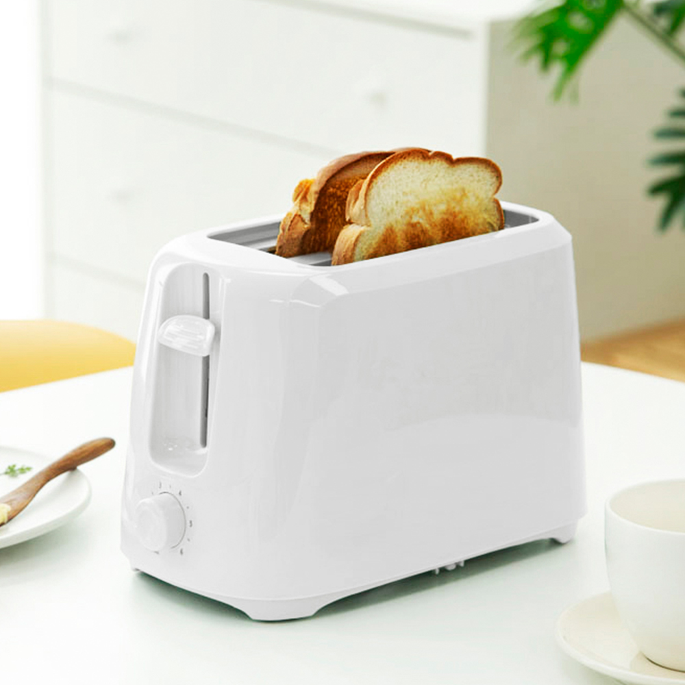
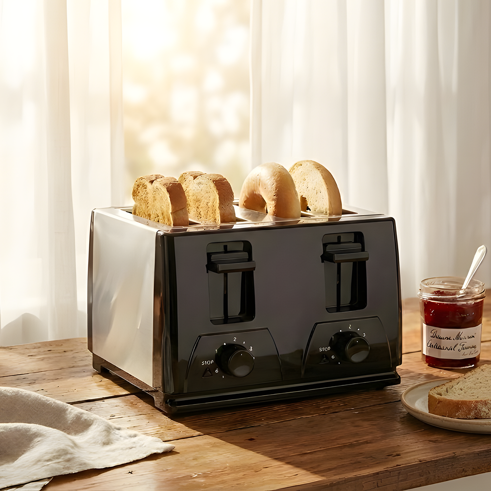
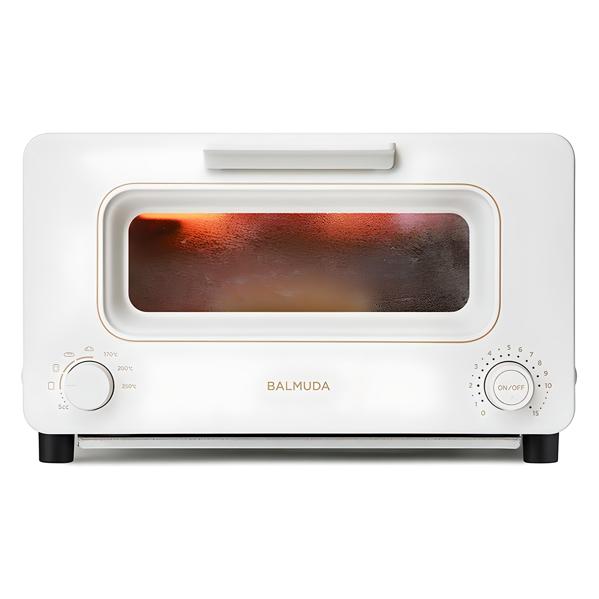

홈 › 제품리뷰 › 주방/조리
토스터, 2구 가성비냐 발뮤다 프리미엄이냐
작성: 생활서식 모음 · 2026-07-19
파트너스 활동의 일환으로 일정액의 수수료를 지급받습니다
🛒 오늘의 쿠팡 특가 보러가기 →
토스터, 1만원짜리랑 27만원 발뮤다가 왜 이렇게 차이 날까요?
핵심은 "슬롯 수와 굽기 조절, 식빵 크기" 3대 를
"자취 한두 장" "가족 여러 장" "빵맛 제대로"상황별 정답 까지 담았으니
📋 목차
토스터, 2구 가성비냐 발뮤다 프리미엄이냐 — 결론 먼저 스펙 비교표: 한눈에 보기 토스터 고를 때 봐야 할 4가지 자취냐 가족이냐, 뭘 사야 할까? 자주 묻는 질문 (FAQ) 결론: 한 줄 요약
토스터, 2구 가성비냐 발뮤다 프리미엄이냐 — 결론 먼저
토스터는 "몇 장을 굽느냐, 빵맛을 얼마나 챙기느냐" 로 갈려요.4구 굽기조절 이 편합니다. 자취·한두 장이면 2구 가성비로 충분하고, 겉바속촉 빵맛을 제대로 챙기려면 발뮤다 스팀 프리미엄입니다.
1 자취·입문 (가성비 초이스)
가성비

1만원대 2구
1. 홈플래닛 베이직 2구 토스터
1만원대 2구 기본 식빵 한두 장 간편 자취·1인용으로 딱
고급 빵맛은 아니어도
추천 대상
자취·1인 가구로 한두 장만 굽는 분 아침 식빵을 간편하게 먹는 분 저렴하게 토스터를 마련할 분 장점
1만원대로 부담 없이 토스터 마련 2구라 식빵 한두 장을 빠르게 구움 단순 조작으로 쓰기 쉬움 단점
굽기 균일도·프리미엄 빵맛은 상위 제품보다 아쉬움 이 제품은 자취·기본용 입니다. 가족이 여러 장이면 2번 4구, 빵맛을 제대로면 3번 발뮤다로 가세요. "한두 장 간편하게"면 가성비 최고입니다.
한줄 리뷰
"아침 식빵 한두 장"이면 2구 가성비로 충분합니다. 저렴하고 간단해요. 여러 장·빵맛을 원하면 2·3번을 보세요.
주요 스펙
제품: 홈플래닛 베이직 2구 토스터 슬롯: 2구 용도: 자취·한두 장 배송: 로켓배송 가격: 약 13,490원 (변동 가능) ※ 실제 스펙·가격과 차이가 있을 수 있습니다
2 가족·여러 장 (베스트 초이스)
베스트

4구·6단계 굽기조절
2. 로븐 4구 토스터 (6단계 굽기조절)
4구 = 한 번에 4장 6단계 굽기 조절 가족 아침 한 번에
가족 아침을 한 번에
추천 대상
가족이 아침에 여러 장을 굽는 분 취향대로 굽기를 조절하고 싶은 분 2구는 부족하고 발뮤다는 과한 분 장점
4구라 식빵 4장을 한 번에 구워 가족 아침이 빠름 6단계 굽기 조절로 취향대로 노릇하게 듀얼 조절로 좌우 다르게 구울 수도 있는 구성 단점
자취·한두 장이면 1번, 빵맛을 제대로면 3번 발뮤다입니다. 2번은 "여러 장 + 굽기 조절" 의 실속 구간 — 가족 아침에 가장 무난합니다.
한줄 리뷰
"가족이 아침에 토스트를 여러 장"이면 4구가 편합니다. 굽기 조절도 되고요. 겉바속촉 빵맛·디자인이 목적이면 3번 발뮤다를 보세요.
주요 스펙
제품: 로븐 4구 토스터 (RV-T401W) 슬롯: 4구 · 6단계 굽기조절 용도: 가족·여러 장 배송: 로켓배송 가격: 약 42,300원 (변동 가능) ※ 실제 스펙·가격과 차이가 있을 수 있습니다
3 겉바속촉 빵맛 (프리미엄)
프리미엄

발뮤다 스팀 빵맛
3. 발뮤다 더 토스터
스팀으로 겉바속촉 빵 종류별 모드 디자인·빵맛 프리미엄
빵집 갓 구운 듯한 겉바속촉
추천 대상
빵을 자주 먹고 빵맛을 제대로 챙기는 분 스팀으로 겉바속촉을 원하는 분 주방 디자인·브랜드를 중시하는 분 장점
스팀 방식으로 겉은 바삭 속은 촉촉한 빵맛을 살림 식빵·크루아상 등 빵 종류별 모드로 최적 굽기 발뮤다 디자인·브랜드로 주방 만족도가 높음 단점
27만원대로 토스터치고 매우 고가, 슬롯은 2장 수준 한두 장 간편·저렴이면 1번, 가족 여러 장이면 2번이 합리적입니다. 3번은 빵맛·디자인·브랜드 에 값을 낼 의향이 있는 분에게 어울립니다.
한줄 리뷰
"빵을 진짜 좋아해서 빵맛을 제대로"면 발뮤다가 값을 합니다. 스팀 겉바속촉이 확실히 달라요. 다만 매우 비싸고 여러 장은 아니니, 실용·가성비면 1·2번이 맞습니다.
주요 스펙
제품: 발뮤다 더 토스터 (K11B-WH) 방식: 스팀 · 빵 종류별 모드 강점: 빵맛(겉바속촉) · 디자인 배송: 로켓배송 가격: 약 270,630원 (변동 가능) ※ 실제 스펙·가격과 차이가 있을 수 있습니다
스펙 비교표: 한눈에 보기
가격·풍량·무게 중 본인에게 중요한 기준부터 보세요. "최고" 표시는 3제품 중 객관적 1위 값입니다.
← 좌우로 스크롤 →
토스터 고를 때 봐야 할 4가지
슬롯·굽기만 맞춰도 "들쭉날쭉·기다림" 실패를 막습니다.
1) 슬롯 수 — 인원
2구: 자취·1~2인 한두 장4구: 가족 여러 장 한 번에아침에 여러 명이 먹으면 4구가 기다림을 줄임 2) 굽기 조절 — 취향대로
굽기 단계가 세분화되면 노릇함을 취향대로 조절 좌우 따로 조절되면 사람마다 다른 굽기 대응 냉동빵·베이글 등 모드가 있으면 편리 3) 식빵 크기·두께 — 안 들어가는 낭패 방지
두꺼운 식빵·베이글이 들어가는 슬롯 폭인지 확인 긴 식빵·특수빵을 자주 먹으면 슬롯 크기가 중요 내부 청소(빵부스러기 받침) 편의도 함께 4) 방식 — 팝업 vs 오븐형 vs 스팀
팝업형: 식빵 굽기에 간편·저렴오븐형: 빵 외 간단 요리까지 겸용스팀형(발뮤다): 겉바속촉 빵맛 특화, 고가자취냐 가족이냐, 뭘 사야 할까?
인원과 빵맛 기대치만 정하면 답이 나옵니다.
자취·한두 장: 1번 홈플래닛 2구 → 1만원대가족·여러 장: 2번 로븐 4구 → 굽기조절 실속빵맛·디자인: 3번 발뮤다 → 스팀 겉바속촉자주 묻는 질문 (FAQ)
Q1. 발뮤다 토스터가 27만원인데 그만한 값을 하나요? 빵을 자주, 제대로 즐기는 분에겐 값을 하고, 아니면 과합니다. 발뮤다는 스팀 방식으로 겉은 바삭 속은 촉촉한 빵맛을 살리고 빵 종류별 모드로 최적 굽기를 제공해, 빵을 좋아하는 분들의 만족도가 높습니다. 다만 굽기만 되면 되는 실용 목적이라면 1~4만원대 제품으로 충분하고, 발뮤다는 빵맛·디자인·브랜드에 대한 값입니다.
Q2. 2구랑 4구, 뭘 사야 하나요? 한 번에 굽는 양으로 정합니다. 자취·1~2인이 한두 장만 구우면 2구로 충분합니다. 가족이 아침에 여러 장을 동시에 구우면 4구가 기다림을 줄여 편합니다. 2구로 여러 장을 구우면 순서를 기다려야 하므로, 인원이 많고 아침이 바쁘면 4구를 권합니다.
Q3. 두꺼운 식빵이 안 들어가는 경우가 있나요? 있습니다. 토스터마다 슬롯 폭이 달라 두꺼운 식빵이나 베이글, 특수빵이 안 들어가거나 끼는 경우가 있습니다. 두꺼운 빵·베이글을 자주 먹는다면 슬롯 폭(와이드 슬롯)이 넉넉한 제품을 확인하세요. 오븐형 토스터는 슬롯 제약이 없어 다양한 빵·크기에 대응하기 좋습니다.
Q4. 팝업 토스터랑 오븐형 토스터, 뭐가 다른가요? 용도 범위가 다릅니다. 팝업형은 식빵을 세워 굽는 방식으로 간편하고 저렴해 식빵 위주면 좋습니다. 오븐형(토스트 오븐)은 내부 공간이 있어 식빵뿐 아니라 피자·간단 그라탕·데우기 등 다양한 조리가 가능하지만 부피가 큽니다. 식빵만 구우면 팝업형, 간단 요리까지 겸하려면 오븐형을 고려하세요.
Q5. 토스터 청소는 어떻게 하나요? 대부분 빵부스러기 받침(크럼 트레이)이 있어 이를 빼서 털어내면 됩니다. 부스러기가 쌓이면 탄 냄새·화재 위험이 있으니 주기적으로 비우는 게 좋습니다. 사용 전 반드시 전원을 뽑고 식은 뒤 청소하세요. 크럼 트레이가 분리되는 구조인지 구매 전 확인하면 관리가 편합니다.
결론: 한 줄 요약
1) 홈플래닛 2구 — 약 13,490원 / 자취·입문. 한두 장 간편, 1만원대 가성비.2) 로븐 4구 — 약 42,300원 / 가족·여러 장. 6단계 굽기조절 실속.3) 발뮤다 더 토스터 — 약 270,630원 / 빵맛·디자인. 스팀 겉바속촉 프리미엄.이 포스팅은 쿠팡 파트너스 활동의 일환으로, 이에 따른 일정액의 수수료를 제공받습니다.